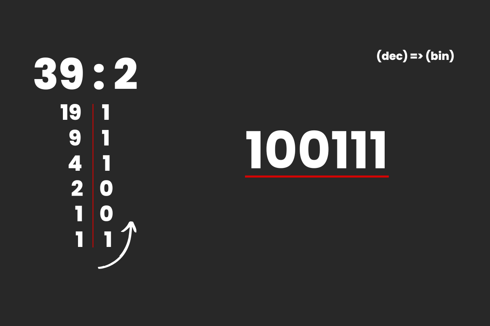
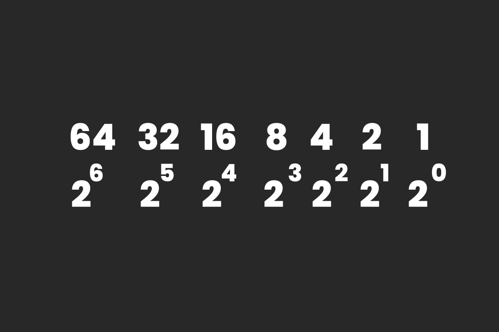
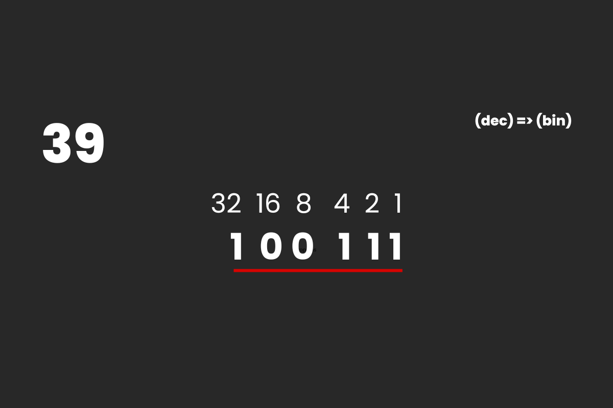
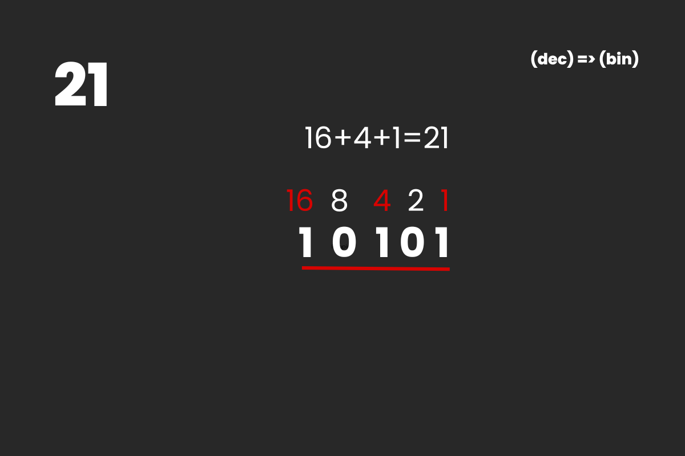
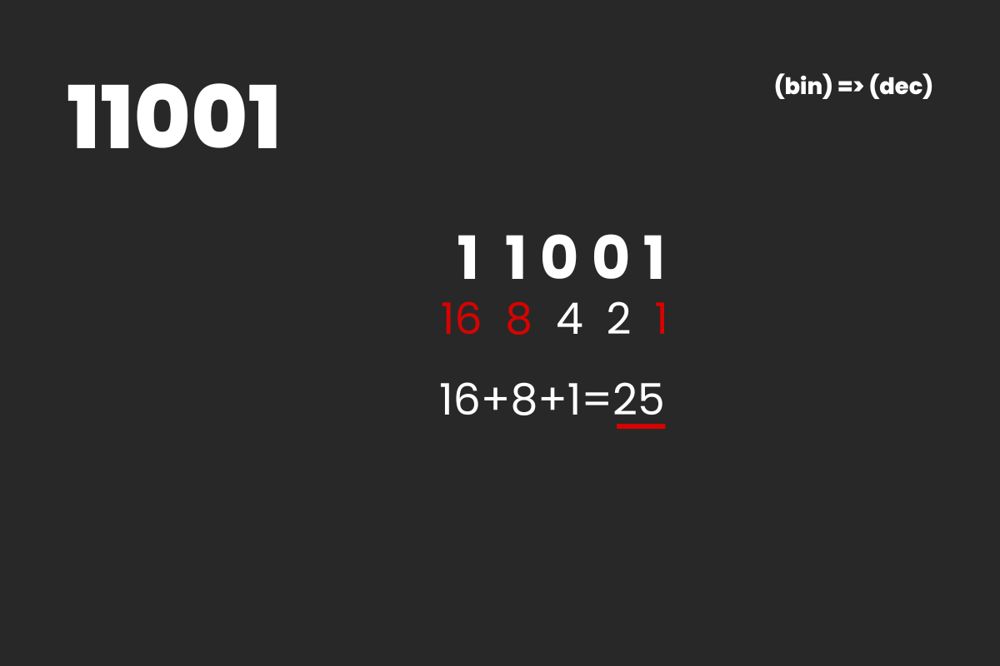
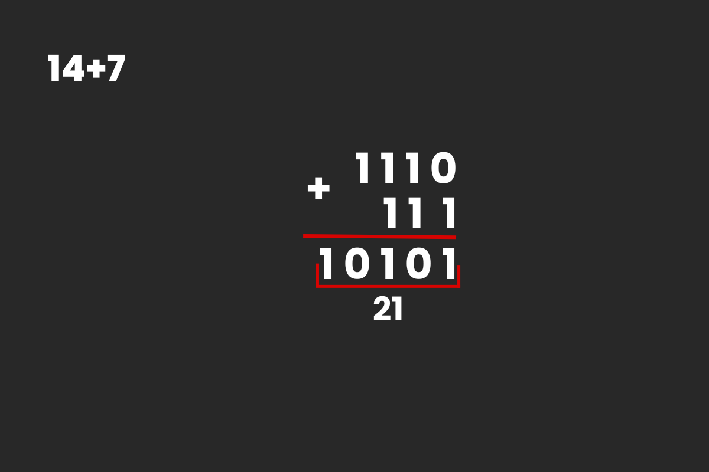

System dwójkowy (binarny) - najprostszy system liczbowy. System posiada dwa znaki: 0 i 1. Tego systemu używa komputer. Istnieją dwa sposoby konwersji z systemu dziesiętnego na binarny.
Sposób 1
Liczbę dzielimy przez dwa i zapisujemy wynik reszty z dzielenia. Otrzymane w ten sposób liczby 0 i 1 zapisujemy w linii od końca otrzymując wynik
Sposób 2
W tym sposobie użyjemy tzw. wag. Kolejne pozycje cyfr od prawej strony odpowiadają kolejnym potęgom liczby 2, zaczynając od 0 jako wykładnika potęgi.
Gdy chcemy dokonać konwersji, musimy tak dobrać takie wagi, aby po dodaniu ich wyszła nasza liczba. W miejsca tych wag wpisujemy 1, natomiast w pozostałych 0, po czym otrzymujemy wynik
Przykład
Zapisz w systemie dwójkowym liczbę 21(10)
Suma liczb: 16 + 4 + 1 będzie równa 21, więc przy tych wagach zapisujemy jedynki, natomiast w pozostałych zapisujemy zera i dostajemy wynik: 10101(2)
Przykład
Zapisz w systemie dziesiętnym liczbę 11001(2)
W miejsca jedynek podstawiamy wartości wag. Następnie dodajemy te wartości i otrzymujemy liczbę 25(10)
Dodawanie liczb binarnych
dodaj w systemie dwójkowym liczbę 14(10) i 7(10)
Dodajemy do siebie liczby słupkowo. Zaczynamy od prawej. Jeśli w kolumnie będzie jedna jedynka, zapisujemy 1, jeśli dwie zapisujemy 0 i w kolejnej kolumnie dodajemy dodatkowe 1, jeśli trzy zapisujemy 1 i w następnej kolumnie dodajemy dodatkowe 1.